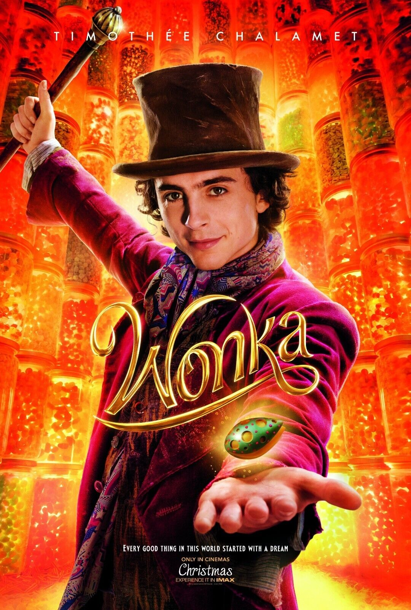

|
Wonka Directed by Paul King, Wonka is a vibrant, musical fantasy that serves as a prequel to Roald Dahl’s classic tale. Starring Timothée Chalamet as a young Willy Wonka, the film follows his early days as an aspiring magician and chocolatier. It explores the journey of a penniless dreamer who arrives in a renowned city, determined to change the world one bite of chocolate at a time, while facing off against a greedy "Chocolate Cartel." WHIMSY AND MUSICAL TALENT Chalamet’s performance was celebrated for its infectious charm and lightheartedness. To prepare for the role, he underwent extensive vocal and dance training, performing original songs that capture the wonder of the character. Eschewing the darker tones of previous iterations, Chalamet focused on the "pure imagination" and kindness of a young Willy, anchored by a whimsical chemistry with his companion, Noodle, and a hilarious CGI Oompa-Loompa played by Hugh Grant. BOX OFFICE TRIUMPH The film became a massive global success, proving Chalamet’s immense "star power" outside of serious dramas. It earned critical acclaim for its production design and Chalamet’s Golden Globe nomination. Beyond the numbers, the performance cemented him as a true "triple threat"—an actor who can lead a major studio musical with grace, humor, and a sense of classic Hollywood magic that appealed to families across the globe. NEW ICONIC LEGACY The film showcases Chalamet’s range by moving away from his typical brooding roles into a space of high-energy theater and joy. He shifts effortlessly from comedic slapstick to moments of quiet, heartfelt sincerity regarding his character's late mother. This role solidified his status as a truly versatile leading man, proving he can carry a billion-dollar franchise on his shoulders through charm and charisma alone. |
 |